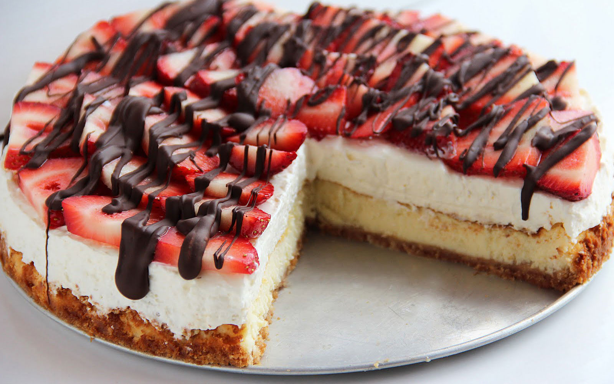

<link href='styles.css' rel='stylesheet' type='text/css'>

<html>
<header>
  <h1>MC's  Breads and Pastries</h1>
  <nav role='navigation'>
    <ul>
      <li><a class="link-1 entypo-home active" href="#home"></a></li>
       <li><a class="link-2 entypo-picture" href="#clients"></a></li>
      <li><a class="link-3 entypo-user" href="#about"></a></li>
      <li><a class="link-4 entypo-mail" href="#contact-us"></a></li>
    </ul>
  </nav>  
</header>
 
<section id="home">
  <h2>Home</h2><hr>
  <div class="img-with-text"><br>
    
    <p><h2><i>&nbsp&nbsp&nbsp&nbsp&nbsp&nbsp&nbsp&nbsp&nbsp&nbsp&nbsp&nbsp&nbsp&nbsp&nbsp&nbsp WELCOME TO MC's<br>&nbsp&nbsp&nbsp&nbsp&nbsp&nbsp&nbsp&nbsp&nbsp&nbsp&nbsp&nbsp&nbsp&nbsp&nbsp&nbsp Breads and Pastries! <br>
	<image src="choco.gif" width="1000"><br>
	<marquee> We Prepare The Best Taste In Town, Straight From Our Oven To You.... </marquee></i></h2></p>
  </div>
</section>

<section id="clients">
  <h2>Breads and Pastries</h2><hr>
  <p><h1>Best Seller: BREADS</h1></p>
  <div class="img-with-text">
     
	
    <class="img-with-text">
    

    <class="img-with-text">
    
    
    <class="img-with-text">
    
  </div>
  <p><h1>&nbsp&nbsp&nbsp&nbsp&nbsp&nbsp&nbsp&nbsp&nbsp&nbsp&nbsp&nbsp&nbsp&nbsp Ensaymada &nbsp&nbsp&nbsp&nbsp&nbsp&nbsp&nbsp&nbsp&nbsp&nbsp&nbsp&nbsp&nbsp&nbsp&nbsp&nbsp&nbsp&nbsp&nbsp&nbsp&nbsp&nbsp&nbsp&nbsp&nbsp&nbsp&nbsp&nbsp&nbsp&nbsp&nbsp&nbsp&nbsp&nbsp&nbsp&nbsp&nbsp&nbsp Corn Bread &nbsp&nbsp&nbsp&nbsp&nbsp&nbsp&nbsp&nbsp&nbsp&nbsp&nbsp&nbsp&nbsp&nbsp&nbsp&nbsp&nbsp&nbsp&nbsp&nbsp&nbsp&nbsp&nbsp&nbsp&nbsp&nbsp&nbsp&nbsp&nbsp&nbsp&nbsp&nbsp&nbsp&nbsp&nbsp&nbsp&nbsp&nbsp&nbsp&nbsp&nbsp&nbsp Bagel &nbsp&nbsp&nbsp&nbsp&nbsp&nbsp&nbsp&nbsp&nbsp&nbsp&nbsp&nbsp&nbsp&nbsp&nbsp&nbsp&nbsp&nbsp&nbsp&nbsp&nbsp&nbsp&nbsp&nbsp&nbsp&nbsp&nbsp&nbsp&nbsp&nbsp&nbsp&nbsp&nbsp&nbsp&nbsp&nbsp&nbsp&nbsp&nbsp&nbsp&nbsp&nbsp Sweet Orangey Bread</h1></p>
  
  <p><h1>Best Seller: PASTRIES</h1></p>
  <div class="img-with-text">
    
	
  <div class="img-with-text">
     
	
  <div class="img-with-text">
     
	
  <div class="img-with-text">
    
  </div>
  <p><h1><br>Mint Cupcake <br><br>Choco Cupcake <br><br> Straberry Creampie <br><br> Specialty Tart<br></h1></p>
   
  
</section>

<section id="about">
  <h2>About Us</h2><hr>
  <h3> <p><i><b>MC's Breads and Pastries</b> is a start-up bakery retail <br>
     establishment. MC's Bakery expects to... <br>
	 catch the interest of a regular loyal customer base with its <b> broad <br>
	 variety of breads and pastry products</b>. The company plans to build <br> 
	 a strong market position in the town, due to the partners' industry <br>
	 experience and mild competitive climate in the area. <br> <br>
	 It aims to offer its products at a competitive price to meet the demand of <br>
	 the middle-to higher-income local market area residents and tourists. <br><br>
	 We offer a broad range of coffee and espresso products, all from high <br>
	 quality Columbian grown imported coffee beans. It caters to all of its <br>
	 customers by providing each customer coffee and espresso products  <br>
	 made to suit the customer, down to the smallest detail. <br><br>
     The <b> bakery provides freshly prepared bakery and pastry products at <br>
	 all times </b> during business operations. Six to eight moderate batches of <br>
	 bakery and pastry products are prepared during the day to <br>
	 assure <b> fresh baked goods are always available. </b><br><br>We have 8 branches here in the Philippines:
	<h3><i>Bulacan <br>
		Quezon City <br>
		Marikina <br>
		Pampanga <br>
		Vigan <br>
		Davao<br>
		Laguna<br>
		Antipolo<br>
	 </i></p></h3>
</section>

<section id="contact-us">
  <h2>Contact Us</h2><hr>
  <p><i>MC's Breads and Pastries is Located at <u>San Jose Del Monte City, Bulacan #342 Robes III, Bontoc street, Brgy. Maharlika</u><br><br>
        You may contact us through the following: <br><br>
		Email: <u>mcsbakerypastries@gmail.com </u><br><br>
		Facebook Page: <u> MC's Breads and Pastries </u><br><br>
		Telephone No: <u>044-815-7417 </u><br><br>
		Cellphone No: <u>(Globe) 09123456789 (Smart) 09123456789</u><br><br>
    
  </h3></i></p>
  
 <form name="contactUs">
						<p>Name <input type="text" name="txtName"><br></p>
						<p>Email <input type="text" name="txtEmail"><br></p>
						<p><input type="radio" name="userType" value="Client">
						Client
						<input type="radio" name="userType" value="Applicant">
						Applicant
						</p>
						Message <br>
						<textarea name="txtMessage" cols="30" rows="4">Type your message here</textarea><br>
						<input type="submit" name="btnSubmit" value="Submit">
						<input type="reset" name="btnClear" value="Clear">
						</form>
</section>

</html>
